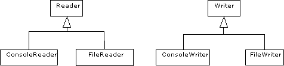

För dem som är intresserade kommer vi att ha en extragenomgång under tisdagslunchen, precis som vanligt.
Die d = new Die(); // skapar en sex-sidig tärning
d.forward(5); // gå framåt 5 steg (Turtle-operation)
eftersom den ser att det inte finns någon operation
forward(int) i klassen Die. Vi säger att
referensvariabeln d har kvalifikationen Die,
och att alla operationer som utförs på d därför måste finnas i
klassen Die.
Hittills har alla objekt vi skapat i kursen varit av samma typ som kvalifikationen för de referensvariabler som refererat till dem, vi har skrivit:
ConsoleWriter writer = new ConsoleWriter();
Turtle t = new Turtle(w,100,100);
Die d = new Die();
...
Detta är dock inte nödvändigt, en stor del av finessen med
objektorienterad programmering är att man kan vara lite flexibel med sina
referenser. Vi har följande regel för deklaration av referensvariabler i Java:
En referensvariabel får referera till objekt av den klass den är deklarerad
som, och dessutom till objekt av alla subklasser till denna klass.
Av nedanstående deklarationer är några tillåtna, och en otillåten:
Turtle t1 = new Turtle(w,100,100); // tillåtet (naturligtvis!)
Turtle t2 = new MazeTurtle(w,maze); // också tillåtet, MazeTurtle är en
// subklass till Turtle
Turtle t3 = new PolyTurtle(w,100,100); // tillåtet
MazeTurtle t4 = new Turtle(w,100,100); // inte tillåtet!
Java-kompilatorn accepterar de första tre deklarationerna eftersom
klasserna MazeTurtle och PolyTurtle är subklasser till
klassen Turtle. Däremot ger den kompileringsfel vid den fjärde
deklarationen eftersom Turtle inte är en subklass till
MazeTurtle.
När vi skall använda våra sköldpaddor händer följande:
t2.penDown(); // går fint, alla sköldpaddor kan sänka pennan.
t2.walk(); // går INTE, trots att t2 faktiskt refererar
// till en MazeTurtle (vi får ett kompileringsfel)
kompilatorn accepterar den första raden, operationen
penDown() är deklarerad i klassen Turtle, så alla
sköldpaddor kan sänka pennan. Vid den andra raden får vi dock kompileringsfel,
och det beror på följande:
Vi skiljer i Java mellan statisk och dynamisk
kvalifikation, med statisk kvalifikation menar vi hur en referens är
deklarerad medan vi med dynamisk kvalifikation menar vilket slags objekt
referensen verkligen refererar till. I exemplet ovan har t2 den
statiska kvalifikationen Turtle (eftersom den är deklarerad som en
Turtle), och den dynamiska kvalifikationen MazeTurtle,
eftersom den refererar till ett MazeTurtle-objekt. Tidigare i
kursen har alla referenser haft samma statiska och dynamiska kvalifikation.
Namnen statisk och dynamisk kvalifikation låter märkvärdiga, men är faktiskt helt naturliga. En variabels statiska kvalifikation kan inte ändras (vi kan bara deklarera den en gång), medan dess dynamiska kvalifikation kan ändras hur många gånger som helst.
När Java-kompilatorn går igenom ett program använder den sig av
referensvariablernas statiska kvalifikation för att avgöra om operationerna går
att utföra eller inte, och eftersom operationen walk() inte finns i
klassen Turtle (som är t2:s statiska kvalifikation) så
ger kompilatorn ett felmeddelande.
Det kan verka korkat att använda den statiska kvalifikationen för typkontrollen, men det är inte alltid kompilatorn kan göra bättre. Betrakta exempelvis följande programrader:
RandomNumberGenerator rng = new RandomNumberGenerator();
Turtle t;
if (rng.randInt(1,10) < 5) {
t = new Turtle(w,100,100);
} else {
t = new MazeTurtle(w,maze);
}
t.walk(); // Kompilatorn vet inte säkert att t är en MazeTurtle
Här kan kompilatorn inte avgöra vilken dynamisk kvalifikation
t kommer att få när programmet körs, och kan därför inte garantera
att operationen walk() går att utföra.
int value = (int) Math.round(x);vilket innebär att uttrycket
Math.round(x) som är av typen
long, dvs ett heltal som kan vara väldigt stort, konverteras till
ett mindre heltal (ett int). Typen long är mer
generell än typen int eftersom alla int-värden kan
lagras i en long-variabel.
På samma sätt kan vi säga att typen Turtle är mer generell än
typen MazeTurtle, vi kan alltid lagra en MazeTurtle i
en Turtle-variabel. I programmet ovan vet vi att t2:s
dynamiska kvalifikation är MazeTurtle, så vi kan på ungefär samma
sätt som ovan skriva:
Turtle t1 = new MazeTurtle(w,maze);
MazeTurtle t2;
t2 = (MazeTurtle) t1;
dvs vi talar om för kompilatorn att t1 är en
MazeTurtle, och att det därför är korrekt att låta t2
referera till den.
Även om vi vill utföra walk()-operationen på t1
måste vi först försäkra kompilatorn om att t1 verkligen har rätt
dynamiska kvalifikation. Det gör vi genom att skriva:
// t1.walk() är inte inte tillåtet eftersom t1 har fel statisk
// kvalifikation. Däremot kan vi skriva:
((MazeTurtle)t1).walk();
Tyvärr måste vi, på grund av Javas prioriteringsregler, skriva ut alla
parenteserna ovan, applikation av operationer har högre prioritet än
typkonvertering.
Om det skulle visa sig att t1 inte refererar till en
MazeTurtle när vi gör anropet ovan så kommer vi att få ett
exekveringsfel.
Det kan förefalla onödigt att kladda till allt som vi gjort ovan, om vi hade
deklarerat t1 som en MazeTurtle direkt hade vi sluppit
alla problem med olika kvalifikation. Det är dock inte alltid man kan undvika
dessa problem (som vi kommer att se när vi pratar om list-hantering mot slutet
av kursen), dessutom medför flexibiliteten att man ganska enkelt kan skriva
program som hade blivit väldigt omständiga att skriva om alla referenser hade
haft samma statiska och dynamiska kvalifikation (se exemplet nedan och veckans
övning).
se.lth.cs.pt.io) finns följande klasser:

Reader och Writer, så vi kan vara flexibla genom att
skriva: Writer writer;
Reader reader;
if ( utskrift till skärmen? ) {
writer = new ConsoleWriter();
} else {
writer = new FileWriter("output");
}
if ( inläsning från tangentbord? ) {
reader = new ConsoleReader();
} else {
reader = new FileReader("input");
}
// nu kan vi skriva ut och läsa in som vanligt, var utskrifterna
// hamnar och varifrån vi läser beror på vilken dynamisk
// kvalifikation writer och reader har:
int n = reader.readInt();
double sum = 0;
for (int i = 1; i <= n; i++) {
sum += reader.readDouble();
}
writer.println("Summan är " + sum);
Vi skulle även ha kunnat skriva: public void calculate(Reader reader, Writer writer) {
int n = reader.readInt();
double sum = 0;
for (int i = 1; i <= n; i++) {
sum += reader.readDouble();
}
writer.println("Summan är " + sum);
}
och anropat denna med exempelvis public static void main(String[] args) {
Calculator calc = new Calculator();
calc.calculate(new ConsoleReader(), new ConsoleWriter());
}
eller public static void main(String[] args) {
Calculator calc = new Calculator();
calc.calculate(new FileReader("input"), new FileWriter("output"));
}
MazeTurtle t1 = new Turtle(w,100,100);
Turtle t2 = new MazeTurtle(w,maze);
TripmeterTurtle t3 = new Turtle(w,50,100);
Turtle t1 = new MazeTurtle(w,maze);
MazeTurtle t2 = new MazeTurtle(w,maze);
Vilka av följande operationer är tillåtna: t1.penDown();
t1.walk();
t2.penDown();
t2.walk();
GameController med två spelare (Player) som attribut.
I operationen playOneRound() har ni sedan låtit dessa två spelare
dra växelvis till dess en av dem vunnit.
I klassen Player har ni använt ett attribut (char
strat) för att tala om hur en spelare skall dra. Detta har inneburit att
klassen Player blivit onödigt ful, om vi vill skapa en spelare som
drar slumpmässigt skriver vi
Player p1 = new Player(nbr,'B',oware,view);fastän det är helt ointressant för en slumpspelare att veta något om vyn (det är bara en mänsklig spelare, som skall klicka på en ruta, som behöver ha tillgång till vyn).
Betydligt snyggare hade varit att ha två klasser, en klass
RandomPlayer och en klass HumanPlayer, för att
beskriva de två olika typerna av spelare. Man skulle då kunna skapa en
slumpspelare och en mänsklig spelare genom att skriva
RandomPlayer p1 = new RandomPlayer(nbr,oware);
HumanPlayer p2 = new HumanPlayer(nbr,oware,view);
Problemet blir då följande: Om vår GameController skall kunna
referera till två spelare, och vi inte i förväg vet vilka två typer av spelare
som skall spela (en RandomPlayer mot en HumanPlayer,
två RandomPlayers mot varandra, eller två HumanPlayers
mot varandra), hur skall vi deklarera spelarna?
En enkel lösning vore att låta både RandomPlayer och
HumanPlayer ärva från en klass Player:
class Player {
}
class HumanPlayer extends Player {
// ...
public void move() {
// ...
}
}
class RandomPlayer extends Player {
// ...
public void move() {
// ...
}
}
Vi skulle då i klassen GameController kunna skriva: class GameController {
private Player p1, p2;
// ...
public GameController(Player p1, Player p2, ...) {
this.p1 = p1;
this.p2 = p2;
// ...
}
// ...
}
och i huvudprogrammet: // ...
Player p1 = new HumanPlayer(1,oware,view),
p2 = new RandomPlayer(2,oware);
GameController controller = new GameController(p1,p2,...);
// ...
eftersom en Player-referens kan referera till alla subklasser
till klassen Player.
Nästa problem uppstår då i operationen playOneRound(): vi vill
anropa operationen move() i spelarklasserna, men vi vet inte i
förväg vilken av klasserna p1 och p2 refererar till.
Om vi skriver
((HumanPlayer)p1).move();så måste
p1 alltid vara en HumanPlayer och vi
har mist den flexibilitet vi eftersträvade.
Lösningen på problemet är en mekanism som kallas abstrakta klasser,
vi deklarerar en klass AbstractPlayer som har en abstrakt
metod move():
abstract class AbstractPlayer {
public abstract void move();
// ...
}
Denna deklaration säger att operationen move() måste
deklareras i subklasser till klassen AbstractPlayer. En klass med
en abstrakt operation blir själv abstrakt, vilket innebär att man inte kan skapa
objekt av den aktuella klassen - om vi hade kunnat skapa en
AbstractPlayer hade vi fått ett objekt som inte hade kunnat göra
move().
Poängen med att införa en abstrakt operation är att kompilatorn vet att alla
klasser som ärver från klassen AbstractPlayer implementerar en
operation move(), och att den därför kan acceptera uttrycket:
p1.move();fastän
p1 har den statiska kvalifikationen
AbstractPlayer. När programmet exekverar raden ovan kontrolleras
vilken dynamisk kvalifikation p1 har, varpå
move()-operationen i den aktuella klassen anropas.
En av poängerna med abstrakta klasser är att vi under exekvering kan välja
vilken typ av objekt som skall användas i ett givet sammanhang (i Oware-exemplet
ovan kan vi vänta till exekvering innan vi bestämmer vilken sorts spelare som
skall spela) - eftersom subklasserna har samma specifikation kan vi anropa dem
på ett standardiserat sätt (i Oware-exemplet kan vi be en
AbstractPlayer att göra ett move() utan att veta exakt
vilken typ av spelare p1 refererar till).
Oware-klass.
Player)
till två nya klasser, HumanPlayer och
ComputerPlayer, med hjälp av den abstrakta klassen
AbstractPlayer.
Oware från
kurshemsidan.
Implementera de olika operationerna, förslaget till lösning på
movePebbles-operationen är riktigt dåligt (det innehåller flera
fel). Du kan antingen försöka hitta de fel som finns i koden, eller försöka
skriva en egen lösning från grunden (kanske enklare).
När du skrivit färdigt klassen Oware skall du testa den genom
att i ditt gamla huvudprogram plocka bort importen av klassen
se.lth.cs.pt.ovn.oware.Oware (för att göra det enkelt kan du helt
enkelt kommentera bort import-raden).
När programmet fungerar kan du hoppa till nästa uppgift.
AbstractPlayer, HumanPlayer och
ComputerPlayer från kurshemsidan (alla tre klasserna finns i
filen AbstractPlayer.java).
AbstractPlayer skall du implementera konstruktorn
och operationen lost() (båda dessa påminner mycket om
motsvarande operationer i klassen Player, som du skrev under de
föregående övningarna).
HumanPlayer och ComputerPlayer
skall du implementera konstruktorerna och move()-operationerna.
Även här kan du titta på hur du skrev under de föregående övningarna.
I ComputerPlayer-klassens move() skall du
slumpa fram en ruta, medan du i HumanPlayer-klassen skall låta
användaren klicka på en ruta.
se.lth.cs.pt.ovn.oware.Oware, så du får
importera den i början av programmet.